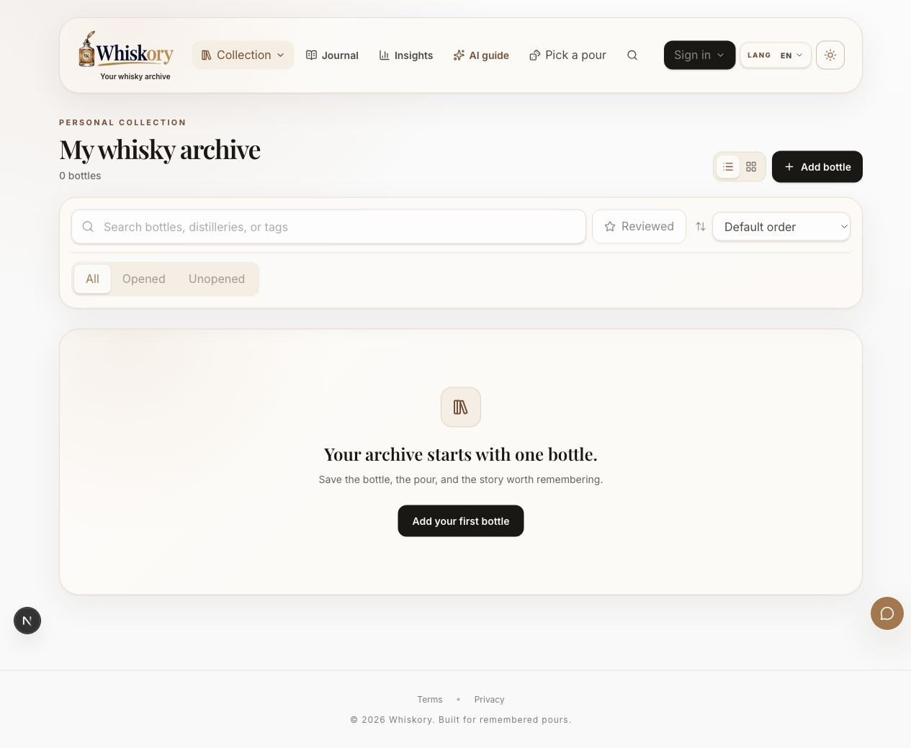

01 / Placia개발 중
PostgreSQL / TypeScript / Transactions
여행 계획과 사진 속 기억을 한곳에 정리하는 앱
여행 사진을 장소별로 정리하고 지난 여행을 돌아보며, 일정·체크리스트·예산을 기기 안에서 관리하는 여행 앱입니다.
프로젝트 자세히 보기JIHOON / STUDIO EDITION
기본 버전BACKEND DEVELOPMENT / APPLICATION SECURITY
데이터 정합성, 인증과 권한 제어, 애플리케이션 보안을 중심으로 개인 서비스의 백엔드를 개발하고 있습니다.
프로젝트 경험 보기01 / PROJECT EXPERIENCE
여행의 기억, 위스키 취향, 매일의 학습과 투자 연구. 각 프로젝트가 어떤 제품인지, 그 안을 어떻게 구현했는지 소개합니다.
PostgreSQL / TypeScript / Transactions
여행 사진을 장소별로 정리하고 지난 여행을 돌아보며, 일정·체크리스트·예산을 기기 안에서 관리하는 여행 앱입니다.
프로젝트 자세히 보기
Next.js / Firebase / React Native
보유한 위스키와 시음 기록을 관리하고, 추천을 탐색하며 원하는 기록을 선택해 공유하는 웹·모바일 서비스입니다.
프로젝트 자세히 보기01매일 듣기·읽기
02단어와 답안 복습
03학습 현황 확인
Flutter / Python / PostgreSQL
중·고등학생의 듣기·읽기 학습과 단어 복습을 돕고, 퀴즈 기록을 학부모 리포트로 연결하는 영어 학습 앱입니다.
프로젝트 자세히 보기01공시 자료 준비
02재무 정보 추출
03연구 입력 보관
Python / XBRL / Mutation testing
SEC 공시 파일을 검증·보관하고 XBRL 재무 관측값과 단위, 보고기간을 추출하는 오프라인 연구 프로젝트입니다.
프로젝트 자세히 보기01물건 압축
02협력해서 운반
03함께 탈출
Unity / C# / Multiplayer
1~4명이 물건을 압축해 옮기고 경찰의 추격을 피해 탈출하는 Unity 기반 게임 프로젝트입니다.
프로젝트 자세히 보기01문제 촬영
02추가 정보 입력
03결과 화면 확인
Python / PostgreSQL / Learning tools
문제 촬영, 추가 정보 입력과 결과 확인 흐름을 탐색한 Flutter 앱입니다. 개발 종료 후 주요 기능을 재사용 자료로 정리했습니다.
프로젝트 자세히 보기02 / ENGINEERING EXPERIENCE
각 프로젝트에 적용한 백엔드 설계와 보안 검증을 주제별로 정리했습니다.
갱신 토큰 교체, 재사용 탐지, 세션 계열 폐기와 만료 조건을 다룹니다.
Placia등록 절차의 원자성, 잠금 순서, DB 제약과 동시 요청을 검증합니다.
Placia계정 소유권, 유효한 가족 관계, 기능 이용 권한과 접근 폐기를 확인합니다.
Resol Routine계정·기기별 이벤트 키, 재전송 데이터의 불변성과 커밋 후 집계를 다룹니다.
Resol Routine허용 경로, 환경 분리, 트랜잭션 기반 할당량과 공개 권한 재검사를 구현합니다.
Whiskory명확한 데이터 계약, 실제 API·CLI 실행과 변이 테스트로 보호 로직을 확인합니다.
Quant Research04 / DEVELOPMENT PRACTICE
구현, 디버깅, 코드 리뷰에 AI를 활용합니다. 제품 요구사항을 정하고 동작을 개선하며 실패 상황의 검증을 요구하는 방식으로 프로젝트를 진행합니다. 기술 사례에는 이 과정에서 나온 설계 결정과 확인 근거를 담았습니다.
허용할 입력과 접근 권한, 상태 변경 조건, 재시도 동작을 구체적으로 정의합니다.
동시 요청, 만료된 인증 정보, 작업 중단과 데이터 충돌을 구현 과정에서 함께 검토합니다.
변경 사항을 회귀 테스트와 실행 기록에 연결하고, 검증 환경과 남은 통합 작업을 명시합니다.
REUSABLE ENGINEERING ASSETS
종료한 수학 앱의 코드를 여섯 개 기능으로 분류하고 원본 소스, 의존성 목록, 관련 테스트와 한계를 함께 보관했습니다. 별도의 Dart import 경계 검사 도구에는 실행 예시와 자체 테스트가 있습니다. 후속 작업에 맞게 수정할 참고 자료로 관리하며, 다른 활성 제품에서의 실제 재사용 여부는 아직 확인되지 않았습니다.
CONTACT
백엔드 개발 직무와 기술 면접, 프로젝트 협업에 관한 연락을 기다립니다.
dev.wlgns@gmail.com